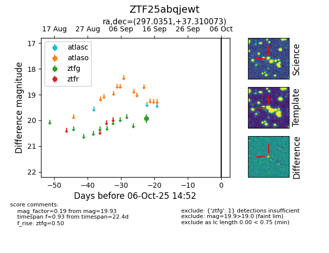

FINK: ZTF25abqjewt
Lasair: ZTF25abqjewt
ALeRCE: ZTF25abqjewt
ZTF25abqjewt (ztf,fink)
equatorial (ra, dec) = (297.0351,+37.31007)
galactic (l, b) = (72.1021,+5.91378)

last ztfg=19.93
1 ztfg detections